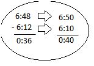

Explore and Discover!
Explore and Discover!
What is being asked in the problem?
Will you complete for the exact time that Rod spent in jogging?
What will you do then?
Estimate the amount of time spent by Rod in jogging.
How will you do it? Round the times in minutes.
Study this.
Subtract the rounded times.
Therefore : Rod jogged for about 40 minutes.
Try to round the actual elapsed time . Is your answer reasonable?
Let's Practice!Find the estimated and actual elapsed times in each situation below :
1. The Tabilang family arrived in Buluarte at 10:28 in the morning. They left their house at 10:05am.
Estimated elapsed time : 20 minutes
Actual time : 23 minutes
2. Lolita started eating her dinner at 6:35pm and finished eating at 7:03pm.
Estimated elapsed time : 30 minutes
Actual time : 28 minutes
3. Section A of the Grade 4 class of Sudipen Central Elemtary School started their tour around Barangay Poblacion at 8:06am. They were back to school at 8:58am.
Estimated elapsed time : 50 minutes
Actual time : 52 minutes